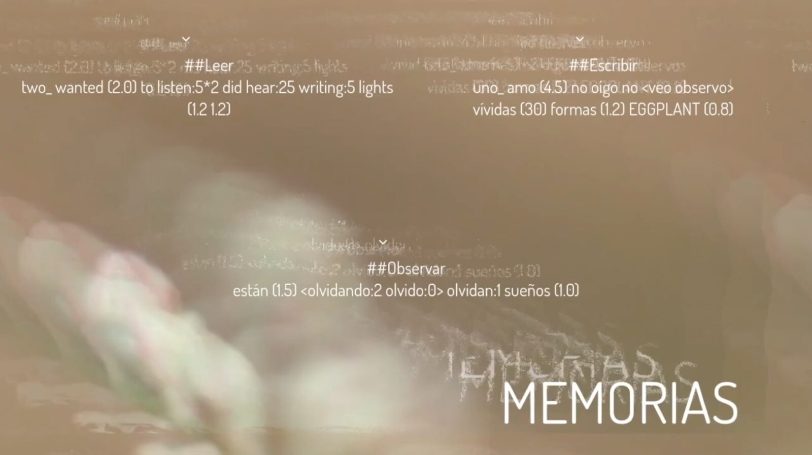
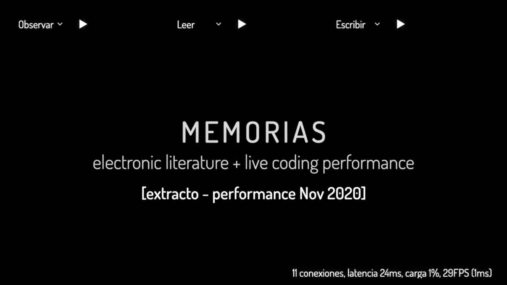
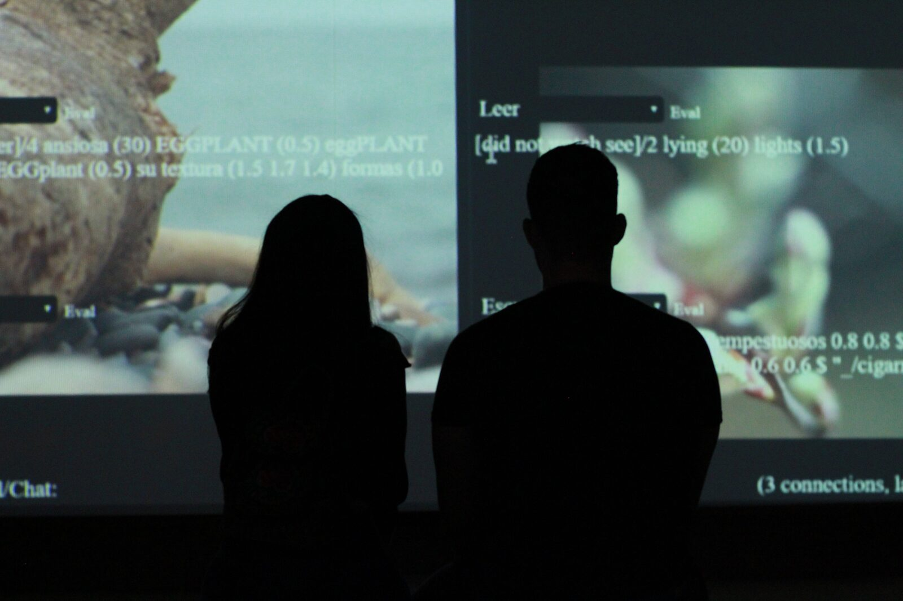
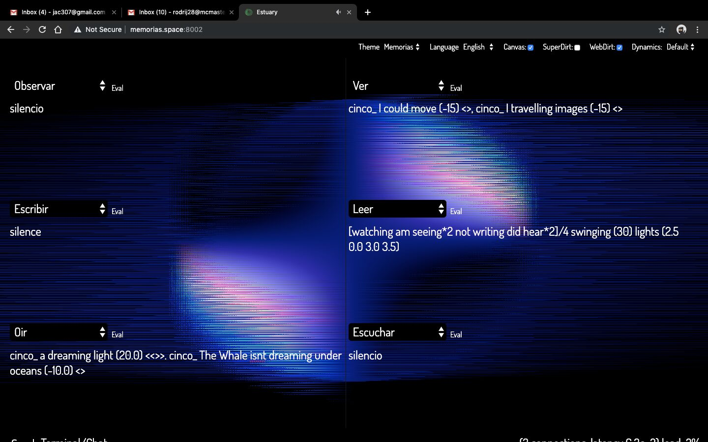

MEMORIAS
PROJECT DESCRIPTION
MEMORIAS is an artistic project that unfolded in six esolangs (programming languages with a high poetic and aesthetic influence) for audio-visual creation implemented using the Estuary Live Coding Platform [ https://estuary.mcmaster.ca/ ].
The languages are based on six short autobiographical texts and use syntax that mixes natural languages (in English and Spanish) with computational languages.
Conceptually, MEMORIAS explores literary/textual materialities, as well as different audio-visual modalities; mixing voices, Cello and Paetzold samples, sonic and visual syntheses, and pre-recorded video clips. This project explores how speech — in its written mode — can be used as an interface that allows the interpreter to communicate with the computer and the audience. In parallel, speech — in its sonic mode — expands the possibilities of spoken literature producing limitless variations of the "original" autobiographical stories. During the live performance, the user activates audio-visual languages through the evaluation of written speech (esolangs).
Technically, MEMORIES was developed from six autobiographical texts written in prose. The texts were created from how I have built my memory system; by Listening, Writing, Observing, Reading, Seeing and Hearing the world that has collided with my own body, and that shapes my individual historicity. In the second stage, the texts were taken to develop esolangs with specific functions that activate either sonic or visual materialities. These esolangs have two functions, (1) as translations that are executed by sending instructions to the computer resulting in visual or sound transformations; and (2) as communicative interfaces with the public, both in written form (programming syntax), and spoken (through voice recordings). The live performance is the co-existence in a single space/time of the esolangs, resulting in a juxtaposition of textures that interconnect audio-visual memories. It is a reference to a complex neural structure in our brains, and how images flow together, connecting images, sounds and words.
In a new iteration (2020), MEMORIAS has been presented as a collaborative performance with members on https://andamio.in/ (Jessica A. Rodríguez, Rolando Rodríguez, Alejandro Brianza, and Luis M. Zirate) that live in multiple locations (Canada, México, Argentina). Each of us improvises with one of the six esolangs.
PROGRAM NOTES
MEMORIAS | Live Coding + E-Lit (2018-21)
MEMORIAS is an artistic project by Jessica A. Rodríguez that unfolded in six esolangs for audio-visual creation drawing from Live Coding and Electronic Literature practices. The languages are based on six short autobiographical texts and have a hybridized syntax using natural and computational languages.
MEMORIAS explores literary/textual materialities, as well as different audio-visual modalities; mixing voices, Cello and Paetzold samples, sonic and visual syntheses, and pre-recorded video clips. This project explores how speech — in its written mode — can be used as an interface that allows the interpreter to communicate with the computer and the audience. In parallel, speech — in its sonic mode — expands the possibilities of spoken literature producing limitless variations of the "original" autobiographical stories. During the live performance, the user activates audio-visual languages through the evaluation of written speech (esolangs).
Credits: Vic Wojciechowska (Canada) /voice in English; Rolando Rodríguez (México) /voice in Spanish; Iracema de Andrade (Brasil-México) /cello samples; Alejandro Brianza (Argentina) /paetzold samples; Luis M. Guzmán-Zirate (México) /installation version on-site support; David Ogborn (Canadá) & Luis N. Del Angel (México-Canada) /general technical support.
PERFORMANCE REQUIREMENTS
Online performance: stereo sound, screen-share access, camera access.
MEDIA


Screenshot - MEMORIAS PERFORMANCE 2021

▶Extract - MEMORIAS PERFORMANCE 2020


MEMORIAS INSTALLATION 2019


Screenshot - MEMORIAS INSTALLATION 2019
ACKNOWLEDGEMENTS
This project was part the Programa de Estímulo a la Creación y Desarrollo Artístico de Michoacán (PECDAM’18) by the state of Michoacán un Mexico. It was also developed within the Networked Imagination Laboratory [NIL] at McMaster University in Hamilton (Canada) in close connection with the SSHRC Insight grant “Platforms and practices for networked, language-neutral live coding”.